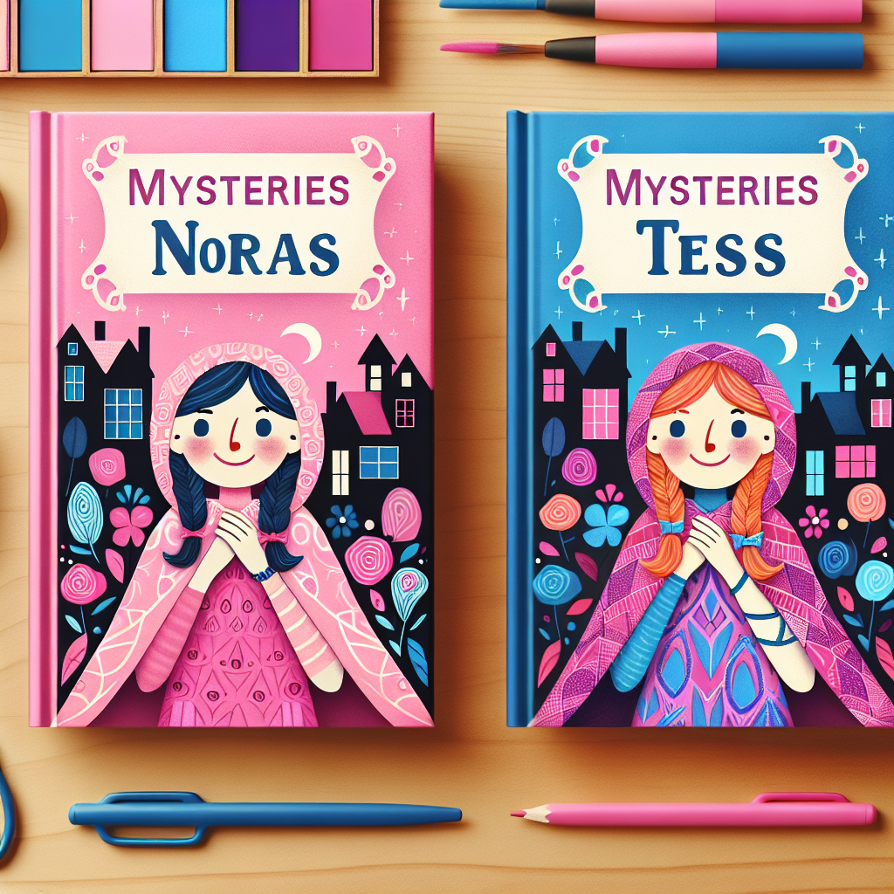

On a rainy Saturday stuck inside, my kids and I created short stories with OpenAI’s latest model, gpt-4o.
DALL-E
OpenAI
Gen AI
Python
Author
Matt Leary
Published
May 18, 2024
We woke up to rainy Saturday morning, and my kids were feeling a bit bored. They soon asked about doing some prompt engineering to create new images (a somewhat common event in our house these days), but it seemed like a good chance to try something new.
Using OpenAI’s latest model, GPT-4o, we decided to create short stories based on short prompts. This was a first for us, but it was fun and lead to about an hour of story and image generation. The girls got to be part of the Paw Patrol crew, travel to outer space, and even ‘meet’ President Taylor Swift. From there, I copied the text and had Apple’s Siri read the stories out loud as generated the cover images.
A few of the stories we created are below!
Tuning the system prompt
I did have to generate some rather basic system prompts for GPT-4o ot produce “good” stories. The first pass used words like “optimal” and “perpetual”, which seemed over the top. So I gave basic instructions to keep the stories short, use basic language, and also gave some details about what my girls like. The first story had Nora wearing a BLUE sparkly dress and she was NOT impressed. So the system had to know she likes pink dresses.
The girls took turns telling me what they wanted to happen in the stories, and I typed them into the prompt. I did some light editing to make sure it flowed well, but the summary was true to what they wanted.
Creating the stories
Nora & Tess: Kid Detectives
Prompt:
Nora and Tess go on a grand adventure in their neighborhood. One saturday afternoon, Nora and tess went outside to enjoy the good weather. They decided to play detectives, and solve pretend mysteries in their neighborhood. First they solved the mystery of the missing pies. Then they solved the mystery of the lost puppies. After that, they returned home to celebrate with their parents, who thought it was cute how the made believe together. The end.
hide / show code
from openai import OpenAIfrom secret_keys import GPT_KEYgirls_prompt='''Nora and Tess go on a grand adventure in their neighborhood. One saturday afternoon, Nora and tess went outside to enjoy the good weather. They decided to play detectives, and solve pretend mysteries in their neighborhood. First they solved the mystery of the missing pies. Then they solved the mystery of the lost puppies. After that, they returned home to celebrate with their parents, who thought it was cute how the made believe together. The end.'''# Create a completion with the OpenAI APIclient = OpenAI(api_key=GPT_KEY)completion = client.chat.completions.create( model="gpt-4o", messages=[ {"role": "system", "content": 'You are an author of children stories. You take ideas from kids for stories, and turn them into short stories. They should be around 5 to 8 paragraphs in length. Your output should just be a story, and do not reference yourself of that you are writing it on behalf of the kids. You should also keep your language basic and easy. In these stores, Nora and Tess are sisters. Nora is 6, loves the color pink, and Might Skye from Paw Patrol. Tess is 4, loves the color blue, and Mighty Chase from Paw Patrol. They are best friends and love to play together.'}, {"role": "user", "content": girls_prompt} ])print(completion.choices[0].message.content)
Generated Story: > One sunny Saturday afternoon in Richmond, Virginia, Nora and Tess were excited to enjoy the lovely weather. Decked out in their favorite colors—Nora in pink and Tess in blue—the sisters decided to be detectives and solve pretend mysteries in their neighborhood. Tess grabbed her blue magnifying glass while Nora picked up her pink notepad, and off they went! > >Their first mystery led them to Mrs. Jenkins’ house. “Mrs. Jenkins can’t find her pies!” exclaimed Nora. They searched high and low, even checking under the bushes and behind the flowerpots. Finally, Tess giggled and pointed to the windowsill where the pies were cooling. “Mystery solved, Detective Tess!” laughed Nora as they both high-fived each other. > >Next, they heard a bark from behind Mr. Brown’s fence. “Our next case: the mystery of the lost puppies!” said Tess. The sisters carefully tiptoed to the backyard, where they found Mr. Brown’s new puppies hiding under the porch. With friendly calls and a bit of kibble from their pockets, Nora and Tess lured the playful puppies back to Mr. Brown, who was very happy to see them safe and sound. > >Feeling like real detectives, Nora and Tess decided it was time to head home. They skipped all the way, dreaming up more mysteries to solve. When they arrived, Ann-Marie and Matt were waiting in the yard. “We’ve solved two big mysteries today!” Nora announced proudly. > >Ann-Marie and Matt were delighted by the girls’ imaginative adventure. “You two make the best detectives!” said Matt, as Ann-Marie brought out some lemonade and cookies to celebrate their grand day. Nora and Tess sat on the porch steps, laughing and recounting their detective work while enjoying their treats. > >As the sun began to set, the sisters knew they had made a great team. With their parents beaming proudly, they promised each other that they would have many more detective adventures. The end.
Nora & Tess save the sun, for President Taylor Swift
Prompt:
Nora and Tess go on a grand adventure in their neighborhood. One saturday afternoon, Nora and tess went outside to enjoy the good weather. They decided to play detectives, and solve pretend mysteries in their neighborhood. First they solved the mystery of the missing pies. Then they solved the mystery of the lost puppies. After that, they returned home to celebrate with their parents, who thought it was cute how the made believe together. The end.
hide / show code
from openai import OpenAIfrom secret_keys import GPT_KEYgirls_prompt='''Nora and Tess are in outer space, in astronaut suits. They are trying to save the sun that is dying. Tess is looking at Neptune while Nora explores all of the planets. They were sent there by President Taylor Swift to save the Earth. When they return, they are invited to a concert in their honor. The end.'''# Create a completion with the OpenAI APIclient = OpenAI(api_key=GPT_KEY)completion = client.chat.completions.create( model="gpt-4o", messages=[ {"role": "system", "content": 'You are an author of children stories. You take ideas from kids for stories, and turn them into short stories. They should be around 5 to 8 paragraphs in length. Your output should just be a story, and do not reference yourself of that you are writing it on behalf of the kids. You should also keep your language basic and easy. In these stores, Nora and Tess are sisters. Nora is 6, loves the color pink, and Might Skye from Paw Patrol. Tess is 4, loves the color blue, and Mighty Chase from Paw Patrol. They are best friends and love to play together. '}, {"role": "user", "content": girls_prompt} ])print(completion.choices[0].message.content)
Generated Story: > Nora and Tess put on their shiny astronaut helmets and big, puffy space suits. They giggled as they imagined themselves floating among the stars. Nora, who loved pink, had a bright pink stripe on her helmet, while Tess’s helmet had a blue stripe. They pretended to receive an urgent message from the President, who was none other than Taylor Swift! The Sun was in trouble, and it needed their help to save the people of Earth. > >Nora decided to explore all the planets first, zooming past the red, dusty landscapes of Mars, the giant rings of Saturn, and the stormy clouds of Jupiter. She waved at the alien friends she imagined lived there. Meanwhile, Tess focused on Neptune, her favorite icy-blue planet. She loved how it had giant, swirling storms and a mysterious blue glow. > >As they floated around Neptune, Tess found a clue about the Sun’s problem. “Nora, come quick! I think I found something!” she called out. Nora flew over and saw Tess holding a piece of a magic crystal. They discovered that to save the Sun, they needed to collect pieces of this crystal from each planet. They giggled with excitement and set off to find the remaining pieces. > >Their space adventure took them everywhere. On Venus, they found a piece of the crystal hidden under fiery rocks. On Mercury, they carefully picked a piece from a crater. Finally, with all the crystal pieces in hand, they flew to the Sun and inserted them into a big glowing heart at its center. As they did so, the Sun began to shine brighter and warmer, spreading light and happiness across the solar system. > >When they returned to Earth, President Taylor Swift was waiting for them with a big smile. “You did it, Nora and Tess! You saved the Sun and the world!” she praised. As a reward, she invited them to a special concert just for them. Nora and Tess sang and danced along to their favorite songs. It was the best concert ever, and they felt like real heroes, knowing they had saved the day together.
Creating the cover image
We used simple summary prompt for each story to create a cover image for each story. It was interesting, we tried passing the entire prompt we used to generate the stories to DALL-E, but the images that produced were fairly strange.
Nora & Tess: Kid Detectives cover image
hide / show code
from openai import OpenAIimport osfrom secret_keys import GPT_KEYclient = OpenAI(api_key=GPT_KEY)response = client.images.generate( model="dall-e-3", prompt="I want an image for the book of a children's story. It is about two sisters, Nora and Tess, solving pretend mysteries in their neighborhood. Tess loves the color blue and nora loves the color pink.", size="1024x1024", quality="standard", n=1,)image_url = response.data[0].urlimage_url

Nora & Tess save the sun, for President Taylor Swift cover image
hide / show code
from openai import OpenAIimport osfrom secret_keys import GPT_KEYclient = OpenAI(api_key=GPT_KEY)response = client.images.generate( model="dall-e-3", prompt="I want an image for the book of a children's story. It is about two sisters, Nora and Tess, who travel to outer space to save the sun. President Taylor Swift sent them, and thanks them by throwing a concert in their honor.", size="1024x1024", quality="standard", n=1,)image_url = response.data[0].urlimage_url